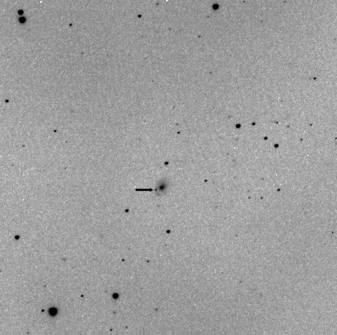

An April discovery for Tenagra Western Australia, and our third for the year.
(click on image for larger version)

Electronic Telegram No. 484 Central Bureau for Astronomical Telegrams INTERNATIONAL ASTRONOMICAL UNION M.S. 18, Smithsonian Astrophysical Observatory, Cambridge, MA 02138, U.S.A. IAUSUBS@CFA.HARVARD.EDU or FAX 617-495-7231 (subscriptions) CBAT@CFA.HARVARD.EDU (science) URL http://cfa-www.harvard.edu/iau/cbat.html
SUPERNOVA 2006bs IN MCG +00-27-14 P. Luckas, Perth, W. Australia; O. Trondal, Oslo, Norway; and M. Schwartz, Patagonia, AZ, report the discovery of an apparent supernova on unfiltered CCD frames taken with the 0.35-m Tenagra telescope at Perth on Apr. 19.51 (at mag 17.7) and 26.48 UT (mag 17.5) in the course of the Tenagra Observatory Supernova Search. SN 2006bs is located at R.A. = 10h26m53s.61, Decl. = -3o42'51".0 (equinox 2000.0), which is 10".5 east and 3".9 south of the center of MCG +00-27-14 (which itself has position end figures 52s.91, 47".1). Nothing was visible at the position of 2006bs on an image taken by Luckas on Apr. 3.51 (limiting magnitude about 18.0). A. V. Filippenko and R. J. Foley (University of California, Berkeley)report that inspection of a low-quality CCD spectrum (range 320-920 nm),obtained through thick clouds on Apr. 27 UT with the Keck I 10-m telescope(+ LRIS), shows that the object is a type-II supernova. The H-alpha lineis dominated by the emission component, but the other Balmer lines exhibittypical P-Cygni profiles. NOTE: These 'Central Bureau Electronic Telegrams' are sometimes superseded by text appearing later in the printed IAU Circulars.
Electronic Telegram No. 487
SUPERNOVAE 2006br AND 2006bs Blondin et al. add that a spectrogram (range 350-740 nm) of SN 2006bs (cf. CBET 484), obtained by Brown on Apr. 27.18 UT, shows it to be a type-II supernova roughly 2-3 weeks past maximum, confirming the classification given in CBET 484 by Filippenko and Foley. The spectrum consists of a blue continuum with P-Cyg lines of hydrogen, sodium, and iron, consistent with the plateau phase of a normal type-II supernova. The spectrum is similar to the type-II-plateau supernova 2004et at 17 days past maximum. Adopting a recession velocity of 9007 km/s for the host galaxy (Beers et al. 1995, A.J. 109, 874), the maximum absorption in the H_beta line (rest 486.1 nm) is blueshifted by 12000 km/s.